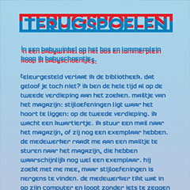
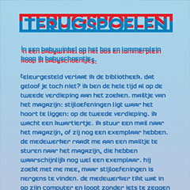
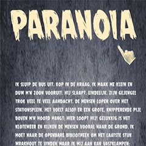
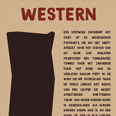
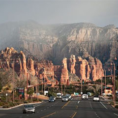
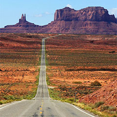
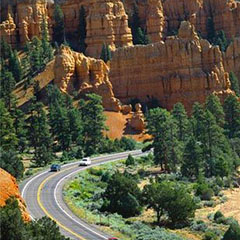
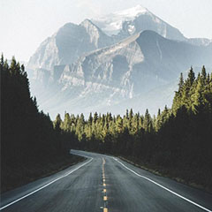
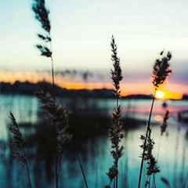

Terugspoelen
2 februari 2011, + 5 minuten #ingewikkeld
2 februari 2011, + 5 minuten #ingewikkeld
4 februari 2011, 10 minuten #spannend
8 februari 2011, +5 minuten #grappig
14 februari 2011, +5 minuten, #grappig #relevant
23 februari 2011, +10 minuten,#mooi #inspirerend
27 februari 2011, -5 minuten,#kort #makkelijk
9 februari 2011, +5 minuten,#ingewikkeld #grappig
16 februari 2011, +20 minuten, #relevant #share
